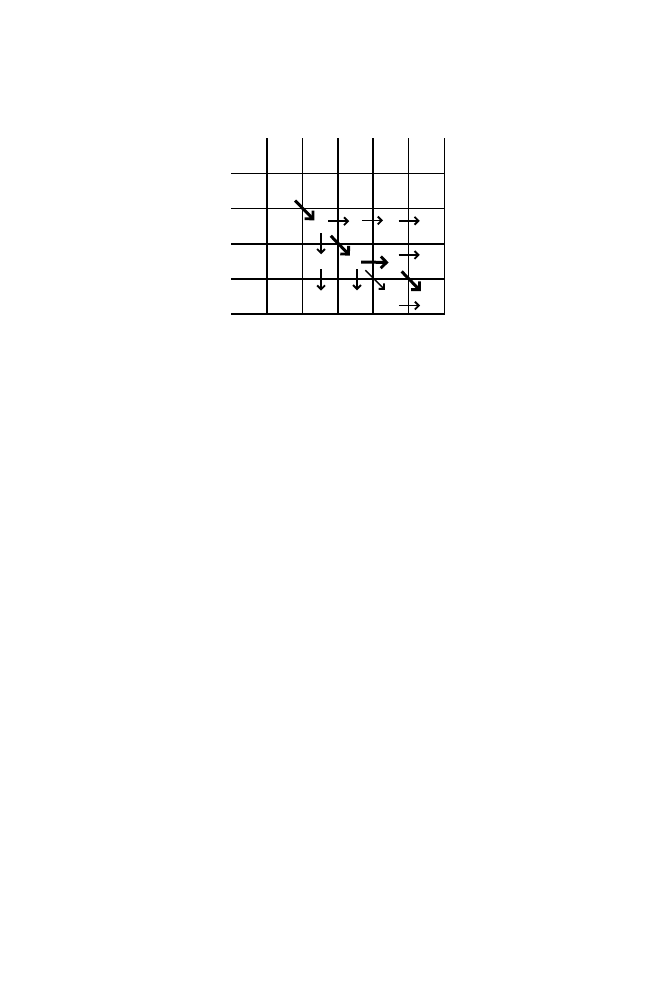

6.2 Basic Example
151
0 1 2 3 4
- W H A T
0 - 0 -2 -4 -6 -8
1 W -2 +1 -1 -3 -5
2 H -4 -1 2 0 -2
3 Y -6 -3 0 1 -1
The final score for the alignment is
S
3
,
4
=
−
1. The score could have been
achieved by either of two paths (implied by two arrows into (3, 4) yielding
the same score). The path through element (2, 3) (upper path, bold arrows)
corresponds to the alignment
WHAT
WH
-
Y
which is read by tracing back through all of the elements visited in that path.
The lower path (through element (3, 3)) corresponds to the alignment
WHAT
WHY
-
Each of these alignments is equally good (two matches, one mismatch, one
indel).
Note that we always recorded the score for the best path into each element.
There are paths through the matrix corresponding to very “bad” alignments.
For example, the alignment corresponding to moving left to right along the
first row and then down the last column is
WHAT
- - -
- - - -
WHY
with score
−
14.
For this simple problem, it was unnecessary to go through all of these
operations. But when the problems get bigger, there are so many different
possible alignments that an organized approach such as the one shown here
is essential. Biologically interesting alignment problems are far beyond what
we can handle with a No. 2 pencil and a sheet of paper.